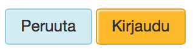
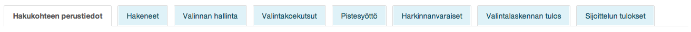

Toiminnalliset komponentit
Tässä kuvataan käyttöliittymän toiminnalliset komponentit joiden avulla käyttäjä voi suorittaa palvelun toimintoja. Niiltä osin kuin ne eivät ole ristiriidassa tässä määritettävien komponenttien kanssa selaimen toiminnallisuuksia tuetaan näiden lisäksi.
Linkit
Linkkeja käytetään siirtymiseen eri sivujen ja näyttöjen välillä. Linkkejä voidaan käyttää myös toiminnoissa mikäli painikkeen käyttö ei ole tarkoituksenmukaista tai kun toiminto ei vaikuta järjestelmän tilaan, esimerkiksi syöttökentän lisäys lomakkeella.
Tekstilinkit esitetään alleviivattuina, eikä alleviivausta käytetä muualla kuin linkeissä. Linkatun tekstin tulee kertoa linkin kohteesta selkokielisesti (esimerkiksi kohdesivun otsikko). Esitettäessä linkkejä otsikoiduissa linkkilistoissa, internet-osoitteina tai muissa vastaavissa tapauksissa voidaan linkit esittää URL-osoitteina. Tällöinkin ensisijaisesti suositellaan käytettävän selkokielisiä linkin kohteen esitteleviä tekstejä, ja tarvittaessa niiden yhteyteen voidaan lisätä URL-osoite suluissa mikäli se katsotaan tarpeelliseksi.
Vietässä hiiren kursori tekstilinkin ylle korostetaan linkki visuaalisesti. Linkeillä käytetään neljää tilaa, joille kullekin on oma visuaalinen määritys (linkkivärejä ei käytetä muualla kuin linkeissä):
- Linkki on Normaali-tilassa (Idle) aina kun se ei ole jossain muussa tilassa. Linkki on oletusarvoisesti Normaali-tilassa.
- Linkki on Hover-tilassa kun hiiren kursori on sen päällä
- Linkki on Active-tilassa kun hiiren painike on alaspainettuna linkin kohdalla. Tällöin linkki tulee valituksi.
- Linkki on Visited-tilassa sen jälkeen kun se on valittu ja kunnes se poistuu selainhistoriasta, jolloin linkki palautuu Normaali-tilaan.
Linkit jotka johtavat sivuille palvelun sisällä (myöh. sisäinen linkki) avataan aina samaan selainikkunaan. Linkit jotka johtavat ulos Opintopolku-palvelusta avataan uuteen selainikkunaan uutena selaimen välilehtenä. Ankkurilinkkejä käytetään vain sivun sisäiseen navigointiin.
- Kun linkki johtaa ulos Opintopolku-palvelusta merkitään se kuvakkeella joka sijoitetaan linkkitekstin yhteyteen sen vasemmalle puolen
- Kun sisäinen linkki sijaitsee linkkilistassa käytetään listan erottimena >> -merkintää. Ulkoisilla linkeillä käytetään samaa kuvaketta myös listoissa.
- Kun linkki johtaa ladattavaan tiedostoon merkitään tiedostotyypin tunniste suluissa linkkitekstin yhteyteen sen oikealle puolen välilyönnillä erotettuna
- Kuvia jotka sisältävät linkin ei korosteta visuaalisesti
Hiiren kursorin on muututtava nuolesta kämmeneksi oletuskäytännön mukaisesti selain- ja käyttöjärjestelmäkohtaisesti vietäessä kursori linkin ylle. Tämä koskee myös kuvia joissa on linkki.
Katso linkkien visuaalinen määritys
Esimerkki: Ulkoinen linkki
Esimerkki: Linkkilista, ulkoiset linkit

Painikkeet
Painikkeita käytetään kun käyttäjälle mahdollistetaan suoritettavaksi toimintoja jotka vaikuttavat järjestelmän tilaan.
Painikkeet sijoitetaan sivupohjien mukaisesti muusta sisällöstä erilleen, yleensä joko sivun tai dialogi-ikkunan ylä- tai alalaitaan. Alueelle jolle painikkeet sijoitetaan ei sijoiteta muuta tietoa tai sisältöä. Painikkeiden järjestyksen tulee olla sama kaikilla sivuilla, sivupohjien määritysten mukaan. Yleisperiaatteena on, että oikealta vasemmalle luettuna (sekä ylhäältä alas) suorittava toiminto edeltää ei-suorittavaa; Kyllä edeltää Ei:tä, Tallenna edeltää Peruutusta.
Sivun ensisijainen toiminto näytetään keltaisena painikkeena. Sivulla suositellaan olevan vain yksi ensisijainen toiminto. Mikäli sivulla on useita samanarvoisia ensisijaisia toimintoja voi keltaisia painikkeita olla tarvittaessa useita, ei kuitenkaan koskaan kolmea enempää. Mikäli sivulla tai dialogissa on vain yksi painike, on se aina ensisijainen.
Mikäli sivulla on haku-toiminto, suositellaan Hae-painikkeen olevan ensisijainen. Lomakkeella Tallenna-painikkeen suositellaan olevan ensisijainen. Ohjatussa sivutuksessa Seuraava-painikkeen suositellaan olevan ensisijainen.
Painikkeita on kolmea tyyppiä:
- Peruspainike, jota käytetään oletusarvoisesti
- Kuvakkeellinen painike, jota käytetään erikseen määritellyissä tapauksissa
- Kuvakepainike, jota käytetään kun painike tulee sijoittaa tietosisällön yhteyteen
Peruspainike
Peruspainike sisältää tekstin joka kuvaa painikkeen toiminnon verbinä joka kirjoitetaan isolla alkukirjaimella. Poikkeuksena ovat monivaiheiset toiminnot, kuten ohjattu sivutus (wizard), joissa käytetään substantiivejä painikkeiden nimeämisessä. Teksti tasataan painikkeen sisällä keskelle.

Peruspainikkeesta on käytettävissä kaksi kokoa: Normaali ja Suuri. Normaali on ensisijainen ja oletusarvoinen painikkeen koko. Suurta painiketta voi käyttää näkymissä, joissa on vain vähän toimintoja ja normaali painike näyttäisi suhteettoman pieneltä muuten tyhjällä sivulla. Esimerkiksi jos näkymässä on vain yksi hakukenttä ja painike (hakukentän on kuitenkin silloin oltava suhteessa painikkeen kokoon).
Katso painikkeiden visuaalinen määritys
Kuvakkeellinen painike
Painike kuvakkeella sisältää tekstin samalla tavalla kuin peruspainike ja sen lisäksi kuvakkeen painikkeen sisällä tekstin oikealla puolen. Teksti ja kuvake tasataan ryhmänä painikkeen sisällä keskelle.
Kuvakkeellista painiketta käytetään seuraaville toiminnoille:
- Lisäys: Lisäyksen kohde voi vaihdella ja ilmaistaan tekstillä. Tarkoituksena on, että kun tehdään lisäyksiä järjestelmään käytetään kuvakkeellista lisää –painiketta.
- Eteneminen: Eteneminen voi olla joko eteenpäin tai taaksepäin ja painike voidaan nimetä eri tavoin, kuten Takaisin / Jatka tai Edellinen / Seuraava. Tarkoituksena on, että kun edetään takaisin tai seuraavaan käytetään kuvakkeellista etenemis –painiketta.
- Lähetä: Käytetään kun lähetetään tietoja sähköpostitse, tai vastaavalla menetelmällä
- Hae: Käytetään kun aktivoidaan haku järjestelmään
- Lataa: Käytetään kun ladataan tietoja tai tiedostoja järjestelmään
- Tulosta: Käytetään kun järjestelmän tietoja tulostetaan
- Tallenna: Käyetään kun järjestelmään tallennetaan tietoja
- Muokkaa: Käytetään kun järjestelmään tallennettuja tietoja avataan muokattavaksi
- Poista: Käytetään kun järjestelmään tallennettuja tietoja poistetaan
Katso kuvallisten painikkeiden visuaalinen määritys
Kuvakepainike
Kuvakepainike on erityistapaus jota käytetään ainoastaan kun painike on välttämätöntä sijoittaa tietosisällön yhteyteen. Kuvakepainikkeessa on ainoastaan kuvake, ja se voidaan sijoittaa taulukkoon, listaan, lomakkeelle tai vastaavaan tilanteeseen.
Kuvakepainiketta käytetään seuraaville toiminnoille:
- Ohje: Kuvake joka avaa lomakkeella joko asiakohtaisen tai lomakekohtaisen ohjeen
- Kalenteri: Kuvake joka avaa kalenteri-kontrollin tiedonsyötön yhteydessä
- Poista: Käytetään kun järjestelmään tallennettuja tietoja poistetaan
- Lisää: Käytetään kun järjestelmään tehdään lisäyksiä tai tiedonsyötössä tehdään lomakkeelle lisäyksiä
- Valikko: Kuvake joka avaa valikon jonka avulla listassa tai taulukossa olevia tietoja voi käsitellä
Välilehtivalikko (Tab menu)
Välilehtien avulla käyttäjä voi siirtyä eri välilehdille ryhmitellyn sisällön välillä sekä tietoja tarkasteltaessa että tietoja syötettäessä. Välilehtivalikolle ei ole sivulla määrättyä paikkaa vaan se voidaan sijoittaa vapaasti ja halutussa koossa.
Suositeltavaa on, että yhdellä sivulla on vain yksi välilehtivalikko. Välilehtivalikon ensimmäinen valinta vasemmalta lukien on oletusarvoisesti valittuna. Valittuna oleva välilehti on visuaalisesti korostettu ja sen sisältämä sisältö on esillä. Käyttäjä voi vaihtaa valintaa valitsemalla toisen välilehden. Valintojen järjestystä ei ole määritetty tai rajoitettu. Välilehtien määrää valikossa ei ole rajoitettu.
Kullakin välilehdellä on otsikko joka esitetään välilehden sisällä. Viemällä hiiren kursorin välilehden päälle joka ei ole valittuna, korostetaan välilehti visuaalisesti ja alleviivataan sen otsikko, osoituksena käyttäjälle, että välilehti on valittavissa.
Esimerkki: Kieliversiot välilehdillä
Esimerkki: Useita välilehtiä asiakokonaisuuksittain

Sivutus (Pagination)
Sivutuksen avulla käyttäjä voi selata tietoa näytöittäin kun se on järjestetty usealle sivulle. Sivutuksen tyypillinen käyttötapaus on hakutulosten esittäminen, jolloin tulosjoukot voivat olla suuria eikä niitä voida ryhmitellä välilehdille.
Sivutuksen ensimmäinen sivu on oletusarvoisesti valittuna ja esillä. Käyttäjä voi vaihtaa sivua sekä kontrolloida sivutuksen muodostamista erityisellä sivutus-kontrollilla. Sivutus-kontrolli suositellaan asetettavaksi sivutetun sisällön yhteyteen sisällön ylä- ja alapuolelle, tai mikäli tarkoituksenmukaista niin ainoastaan sisällön alapuolelle.
Sivutus-kontrolli muodostuu seuraavista elementeistä järjestyksessä vasemmalta oikealle:
- Sivutetun sisällön määräindikaattori: Esitetään numeraalinen tieto sivutetun sisällön määrästä tekstitunnistella, esimerkiksi: 1000 hakutulosta.
- Siirry edelliselle sivulle –painike: Painikkeen avulla käyttäjä voi siirtyä edelliselle sivulle
- Siirry sivulle –painike: Sivujen lukumäärä ilmaistaan numeroituina painikkeina joiden avulla käyttäjä voi siirtyä sivutuksessa haluamalleen sivulle. Painikkeita muodostetaan yhtä monta kuin sivutuksessa on kulloinkin sivuja ja ne numeroidaan 1:stä alkaen vasemmalta oikealle. Sivu jolla kulloinkin ollaan korostetaan visuaalisesti. Painikkeet esitetään seuraavasti:
- Mikäli sivuja on enintään 8, esitetään kaikki painikkeet vierekkäin
- Mikäli sivuja on enemmän kuin 8, esitetään oletusarvoisesti 5 ensimmäistä painiketta ja 2 viimeistä painiketta ja niiden välissä … -indikaattori joka ilmaisee välissä olevia sivuja. Kun käyttäjä sivujen välillä liikkuessaan siirtyy 5:ttä sivua pidemmälle esitetään esillä olevan sivun lisäksi sen vasemmalla puolen 4 edellistä sivua ja … -indikaattorin jälkeen oikealla puolen 2 viimeistä sivua (esimerkiksi jos käyttäjä on sivulla 12, esitetään sen vasemmalla puolella sivut 8, 9, 10, 11). Kun käyttäjä sivujen välillä liikkuessaan siirtyy sivulle joka on enintään 3:n sivun päässä viimeisestä sivusta korvataan … -indikaattori painikkeella (esimerkiksi jos sivuja on 20 ja käyttäjä siirtyy sivulle 17, esitetään sivut 18, 19,20 sivun oikealla puolen sen sijasta että sivun 18 tilalla olisi …-indikaattori).
- Siirry seuraavalle sivulle –painike: Painikkeen avulla käyttäjä voi siirtyä seuraavalle sivulle
- Sivujen määrän valikko: Alasvetovalikko jonka avulla käyttäjä voi valita yhdellä sivulla esitettävän sisällön määrän. Nimiönä “Näytä”. Alasvetovalikon sisällöksi suositellaan vakiomuotoisesti 10, 50, 100, 200, 500.
- Sisällön järjestys valikko: Alasvetovalikko jonka avulla käyttäjä voi järjestää (sort) sisällön eri muuttjien mukaan joko nousevaan tai laskevaan järjestykseen. Muuttujia voivat olla esimerkiksi aakkosjärjestys, aikajärjestys tai muut vastaavat esitettävää sisältöä järjestävät muuttujat.
Mikäli sivutettua sisältöä ei voi tarkoituksenmukaisesti jakaa määräyksiköihin, esimerkiksi jos kysmyksessä on usealle sivulle jakaantuva tekstiartikkeli tulosjoukon sijasta, käytetään kevyempää sivutus-kontrollia, jossa ei ole määräindikaattoria, sivujen määrän valikkoa eikä sisällön järjestyksen valikkoa. Muilta osin sivutus-kontrolli toimii samoin kuin yllä kuvattu.
Ohjattu sivutus (Wizard)
Ohjattua sivutusta käytetään kun halutaan ohjata käyttäjä käymään tietoja läpi tai syöttämään tietoja määrätyssä järjestyksessä tai halutaan ohjata käyttäjä monivaiheisen toiminnon läpi tai sivun sisältö on jaettavissa selkeisiin vaiheisiin.
Jokainen vaihe nimetään otsikolla ja järjestystunnuksella niin, että käyttäjä näkee koko ajan kuinka monta vaihetta kokonaisuudessaan on ja missä kohdin hän on kullakin hetkellä. Sivu jossa käyttäjä tällä hetkellä, sivut joilla hän on jo ollut sekä sivut joilla hän ei vielä ole ollut erotetaan visuaalisesti. Käyttäjä voi liikkua sivuilla eteen- ja taaksepäin yksi sivu kerrallaan. Liikkuminen tapahtuu etenemispainikkeilla, jotka nimetään Edellinen / Seuraava.
Ensimmäisessä näkymässä Edellinen-painike nimetään “Peruuta”, jonka avulla käyttäjä voi peruuttaa pois ohjatusta sivutuksesta takaisin näkymään josta hän sen aktivoi.
Viimeisessä näkymässä Seuraava-painike nimetään “Valmis”, jonka avulla käyttäjä voi päättää ohjatun sivutuksen ja palata takaisin näkymään jos se aktivoitiin. Mahdolliset syötetyt tiedot ja tehdyt valinnat tallennetaan.
Sivuille voidaan asettaa pakollisia toimintoja, kuten valintoja tai tiedon syöttöä, jolloin seuraavalle sivulle eteneminen ei ole mahdollista ennenkuin pakolliset toiminnot on suoritettu. Syötettäessä tietoa tarkistetaan tietojen oikeellisuus ja pakollisuus siirryttäessä sivulta toiselle. Mikäli pakollisia tietoja puuttuu tai tiedot ovat virheellisiä pysytään sivulla ja ilmoitetaan virheilmoituksella tehtävistä toimenpiteistä jotka edellytetään ennen jatkamista seuraavalle sivulle.
Edellisillä sivuilla tehdyt valinnat tai tiedonsyötöt voivat vaikuttaa seuraavien sivujen sisältöön.
Mikäli sivuilla ei ole pakollisia tietoja, voidaan sallia myös siirtyminen sivulta toiselle vapaassa järjestyksessä valitsemalla sivun (vaiheen) otsikko tai järjestystunnus.
Dialogit
Dialogit ovat ikkunoita jotka avataan varsinaisen näkymän päälle kun halutaan varmistaa käyttäjän tekemä valinta tai toiminto, tai kun käyttäjältä pyydetään lisätietoja tai valintoja toiminnon suorittamisen tai tiedonsyötön yhteydessä. Dynaamisten lomakkeiden mahdollisuuksien myötä tarve käyttää dialogeja tiedonsyötön yhteydessä vähenee ja onkin suositeltavaa pyrkiä tältä osin suunnittelemaan toiminnot suoraan lomakkeille dialogien sijaan.
Dialogi-ikkunat suljetaan vain käyttäjän toimesta.
Katso Dialogi-ikkunan visuaalinen määritys
Käyttöliittymässä suositellaan käytettävän pääsääntöisesti kahdenlaisia dialogeja, jotka valitaan käyttötarkoituksen mukaan.
Valintadialogi
Kun käyttäjää pyydetään tekemään valinta eri vaihtoehtojen välillä toiminnon yhteydessä tai tiedon syötön yhteydessä käytetään valintadialogia. Dialogi avataan kun käyttäjä aktivoi toiminnon ja dialogissa tehdyt valinnat vaikuttavat toimintoon, tai vastaavasti dialogi avataan syöttölomakkeelta ja dialogissa tehdyt valinnat siirtyvät syöttölomakkeelle.
Dialogissa voidaan käyttää erilaisia toiminnallisia komponentteja valintojen esittämiseksi ja tekemiseksi. Dialogi sisältää Peruuta ja Hyväksyntä –painikkeet. Hyväksyntä-painike voidaan nimetä tarkoituksenmukaisesti joko toiminnon mukaan (esimerkiksi Lähetä, Tulosta) tai valinnan mukaan (esimerkiksi Valmis).
Kun dialogi peruutetaan toiminnon yhteydessä peruutetaan myös toiminto ja palataan näkymään josta dialogi aktivoitiin. Kun dialogi peruutetaan tiedon syötön yhteydessä palataan takaisin näkymään josta dialogi aktivoitiin ilman valintaa.
Kun dialogi hyväksytään toiminnon yhteydessä suoritetaan toiminto dialogissa tehtyjen valintojen mukaisesti ja edetään toimintokohtaiseen näkymään. Kun dialogi hyväksytään tiedon syötöän yhteydessä palataan lomakkeelle josta dialogi aktivoitiin ja dialogissa tehdyt valinnat siirtyvät lomakkeelle tai vaikuttavat lomakkeeseen.
Varmistusdialogi
Kun käyttäjän aktivoima toiminto halutaan varmistaa käytetään varmistus-dialogia jossa käyttäjän tekemä toiminto kuvataan ja pyydetään vahvistamaan. Tyypillinen esimerkki varmistusta vaatimasta toiminnosta on tietojen poistaminen, jolloin käyttäjää pyydetään vahvistamaan poisto ennen sen suorittamista.
Dialogi sisältää painikkeet hylkäävään ja hyväksyvään vastaukseen, jotka nimetään kysymyksen- ja tarkoituksenmukaisesti, esimerkiksi Ei / Kyllä tai Peruuta / Ok. Painikkeiden järjestyksessä noudatetaan painikkeille määritettyä järjestystä (kts. Painikkeet).
Dialogista voi poistua vain vastaamalla joko hylkäävästi tai hyväksyvästi. Hylkäävä vastaus peruuttaa toiminnon, hyväksyvä vastaus suorittaa sen.
Taittuva lista (Collapsible list)
Taittuvaa listaa suositellaan käytettäväksi kun listassa on paljon sisältöä ja se voidaan ryhmitellä asiakokonaisuuksittain. Asiakokonaisuudet esitetään otsikoina joita käyttäjä voi avata ja sulkea. Kun asiakokonaisuus on suljettu esitetään siitä ainoastaan otsikko. Kun asiakokonaisuus on avattu esitetään siitä otsikon lisäksi siihen kuuluvat listamerkinnät.
Asiakokonaisuuksien määrää ei ole rajoitettu, eikä lisämerkintöjen määrää per asiakokonaisuus. Yhtäaikaa avoinna olevien asiakokonaisuuksien määrää ei ole rajoitettu. Oletusarvoisesti kaikki asiakokonaisuudet ovat suljettu.
Vaihtoehtoisesti voidaan oletusarvoisesti avata ensimmäinen asiakaskokonaisuus, mutta tällöin on varmistettava, että kaikki asiakokonaisuudet on käyttäjän nähtävissä ensisilmäyksellä ilman sivuvieritystä. Tämän ratkaisun käyttö riippuu siis asiakokonaisuuksien määrästä listassa sekä ensimmäisen asiakokonaisuuden sisältämien listamerkintöjen määrästä.
Vietäessä hiiren kursori otsikon tai listamerkinnän päälle korostetaan se visuaalisesti. Otsikon yhteydessä esitetään nuoli-kuvake joka ilmaisee listan tilaa: nuoli on alaspäin kun lista on auki, nuoli on oikealle kun lista on kiinni. Listamerkintäjen yhteydessä voidaan myös tarvittaessa esittää kuvakkeet (kuvakkeellinen lista).
Taittuvaan listaan voidaan yhdistää muita komponentteja, kuten yksi- ja monivalinta tai listan sisältö voi olla linkkejä. Kun taittuvaa listaa käytetään yksivalintalistana siinä ei käytetä valintanappeja (radio button), monivalinnassa valintaruutuja (checkbox) käytetään. Mikäli taittuvan listan yhteydessä käytetään monivalintaa merkitsee asiakokonaisuuden valitseminen kaikkien sen sisältämien listamerkintöjen valintaa, ja päinvastoin (valinnan poistaminen). Taittuva lista voidaan yhdistää myös taulukkoon jolloin taulukon rivejä avataan/suljetaan kuten edellä kuvattu.

Taittuva paneeli (Collapsible panel)
Kokoontaitettava paneeli käyttäytyy kuten kokoontaitettava lista, mutta se voi sisältää listamerkintöjen sijasta laajemmin ja vapaammin erilaista sisältöä, kuten taulukoita, tietojen esitystä, toiminnallisia komponentteja, yms.
Kokoontaitettavaa paneelia suositellaan käytettäväksi kun tarkastelunäkymässä halutaan jäsentää esitettävää tietoa.
Asiakokonaisuudet esitetään paneeleina joilla on otsikot. Paneelin alueella voi olla erilaista sisältöä. Käyttäjä voi avata ja sulkea paneeleja samaan tapaan kuin kokoontaitettavan listan asiakokonaisuuksia.
Asiakokonaisuuksien määrää ei ole rajoitettu, eikä sisällön määrää per asiakokonaisuus. Yhtäaikaa avoinna olevien asiakokonaisuuksien määrää ei ole rajoitettu. Oletusarvoisesti ensimmäinen asiakokonaisuus on avoinna, muut suljettuina.
Hierarkinen lista
Hierarkista listaa suositellaan käytettäväksi kun listan asiakokonaisuudet ja listamerkinnät on järjestetty hierarkiseen rakenteeseen. Hierarkinen lista käyttäytyy ja toimii kuten taittuva lista, kuitenkin niin että se huomioi listan hierarkisuuden jossa voi olla sisäkkäisiä hierarkiatasoja.
Hierarkiatasot nimetään otsikoin. Kukin hierarkiataso voi sisältää listamerkintöjä ja/tai alempia hierarkiatasoja. Alemmat hierarkiatasot ja niillä olevat listamerkinnät sisennetään edelliseen hierarkiatasoon nähden. Hierarkiatasojen lukumäärää ei ole rajoitettu, mutta käyttöliittymässä ei suositella käytettävän syvempiä kuin kolmen tason hierarkioita listoissa.
Hierarkisessa listassa käytetään kuvakkeita niin, että tasot jotka sisältävät alatasoja erotetaan kuvakkeella tasoista jotka eivät sisällä alatasoja.
Jokainen hierarkiataso avataan erikseen. Kun käyttäjä avaa hierarkiatason avautuu sen seuraavalle alemmalle tasolle määritetyt listamerkinnät ja/tai hierarkiatasot (otsikot).
Mikäli hierarkista listaa käytetään valintalistana, indikoidaan visuaalisesti kulloinkin listasta valittuna oleva taso ja/tai listamerkintä
Valintalista
Valintalistaa käytetään kun käyttäjälle esitetään vaihtoehtoisia arvoja valittavaksi. Valintalistaa käytetään tiedon syötössä jolloin valitut arvot tallennetaan järjestelmään sekä muuttujien valinnassa esimerkiksi hakuehtojen tai toimintovaihtoehtojen yhteydessä. Valintalistalla tulee olla otsikko joka kuvaa käyttäjälle tehtävän valinnan.
Valintalista voi olla joko avattava tai avonainen. Avattavaa valintalistaa käytetään kun halutaan säästää tilaa näkymässä. Avonaista valintalistaa käytetään kun valittavia arvoja on rajallinen määrä ja ne mahtuvat kaikki esille.
Valintalista voi olla joko yksi- tai monivalintainen. Yksivalintaisessa valintalistassa käyttäjä voi valita vain yhden arvon. Mikäli käyttäjä vaihtaa valintaa siirtyy valinta edelliseltä arvolta uudelle. Monivalintaisessa valintalistassa käyttäjä voi valita useita arvoja.
Alasvetovalikko (Combo box, drop down menu)
Alasvetovalikkoa suositellaan käytettäväksi avattavana yksivalintalistana.
Listan ollessa suljettuna siinä on näkyvillä arvo jonka käyttäjä on valinnut. Listan ollessa avattuna käyttäjän valitsema arvo on korostettu. Käyttäjä voi valita arvon listasta, tai kirjoittaa sen, jolloin valintalista suodattuu syötettyjen merkkien mukaisesti. Vain listassa määritetyt arvot hyväksytään. Listan sisältö järjestetään mielekkäästi käyttötarkoituksen mukaan, esimerkiksi aakkosjärjestykseen.
Yksivalinta
Avonaisessa yksivalintalistassa on esillä kaikki listan arvot. Kukin arvo on merkitty valintanapilla (radio button). Käyttäjä voi valita listasta yhden arvon. Valinta indikoidaan täytetyllä valintanapilla.
Vaihtoehtoisesti yksivalintalistana voidaan käyttää kuvakkeellista tai hierarkista listaa jossa valittu arvo korostetaan visuaalisesti.
Valinta valintanappien tai muun visuaalisen valinnan korostamisen välillä suositellaan tehtäväksi sivun muun sisällön perusteella huomioiden se mikä palvelee käyttötarkoitusta parhaiten.
Valintanappeja voi käyttää myös yksittäin osana taulukko tai muuta komponenttia.
Monivalinta
Avonaisessa monivalintalistassa on esillä kaikki listan arvot. Kukin arvo on merkitty valintaruudulla (checkbox). Käyttäjä voi valita listasta yhden tai useamman arvon. Listan yhteydessä esitetään Valitse kaikki –valintaruutu kun se on tarkoituksenmukaista. Mikäli käyttäjä valitsee sen, valitaan kaikki listan arvot kerralla. Tehdyt valinnat indikoidaan täytetyllä valintaruudulla.
Mikäli monivalintalistassa on runsaasti arvoja eikä niitä voida esittää kaikkia kerralla käytetään taittuvaa tai vieritettävää listaa. Tällöin valitut arvot esitetään täytettyjen valintaruutujen lisäksi monivalintalistan oikealla puolella listassa. Mikäli valittujen lista ei mahdu oikealle puolelle voidaan se sijoittaa myös valintalistan alapuolelle. Valitun arvon edessä näytetään punainen rasti, josta valitun arvon voi myös poistaa. Jos valittuja arvoja on useita, ne esitetään allekkain tai vierekkäin siten, että rastit kohdistuvat pystysuunnassa samaan sarakkeeseen tai vaakasuunnassa samalle riville.
Jos monivalintalistassa on todella runsaasti arvoja ja niiden esittäminen taittuvana listana on epäkäytännöllistä, käytetään valintaan hakukenttää. Käyttäjä syöttää hakusanan hakukenttään ja järjestelmä hakee vaihtoehdoista syötettyä hakusanaa vastaavat vaihtoehdot. Valitut arvot esitetään oikealla puolella listassa kuten edellä.
Valintaruutuja voi käyttää myös yksittäin osana taulukkoa, hakuehtoja tai muissa tarkoituksissa. Tällöin valintaruudun valitseminen merkitsee positiivista valintaa (hyväksyntä, valinta), ja valintaruudun valitsematta jättäminen negatiivista valintaa (hylkääminen, valitsematta jättäminen).
Toimintojen aktivointi monivalintana
Käyttäjä voi valita listasta useita tietoja ja sen jälkeen valita niille yhteisesti toiminnon, esimerkiksi Poista tai Muokkaa. Valinta tai monivalinta voi olla edellytyksenä joidenkin toimintopainikkeiden aktivoitumiselle.
Kalenterikontrolli (kuvakepainike)
Päivämäärien syötössä käytetään kalenterikontrollia tekstisyötön lisäksi. Kalenterikontrolli käynnistetään syöttökentän yhteydessä olevasta painikkeesta ja sen avulla valitaan päivämäärä. Kontrolli sijoitetaan ensisijaisesti syöttökentän sisälle, ja toissijaisesti mikäli tämä ei ole mahdollista kentän välittömään yhteyteen oikealle puolelle. Kalenteri avaa kuukausinäkymän, jossa voi selata kuukausia ja valita halutun päivämäärän. Kalenterikontrollissa ei ole kellonajan valintaa.
Valikkokuvake (kuvakepainike)
Valikkokuvake voidaan lisätä taulukoihin ja listoihin riveittäin. Se sijoitetaan aina rivin alkuun vasemmalle puolen ennen tekstiä. Valikkokuvake avaa valittaessa valikon josta voidaan valita toimintoja suoritettavaksi kyseiselle tiedolle.